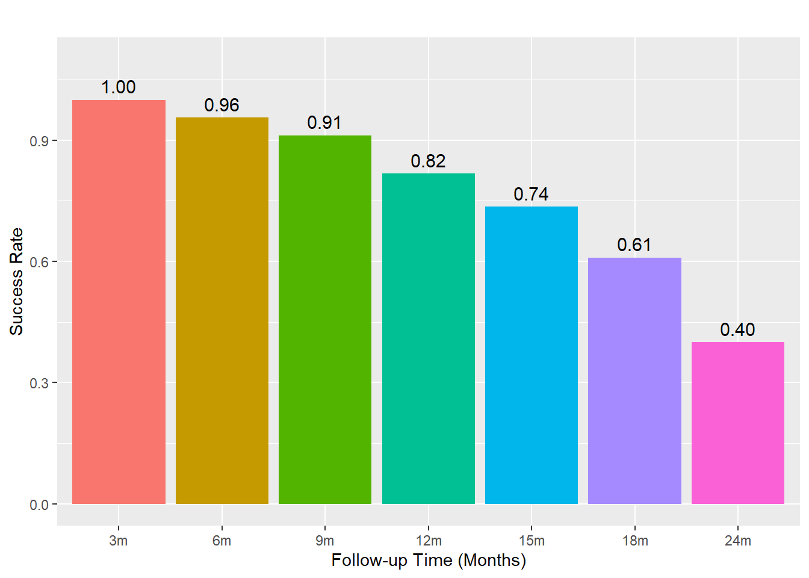
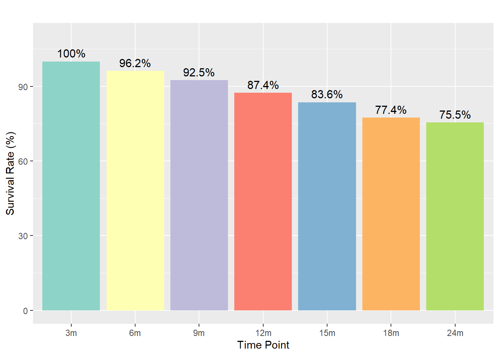

04/25 2025
2025-04-25
Last updated: 2025-05-13
Checks: 6 1
Knit directory: Collaborations/
This reproducible R Markdown analysis was created with workflowr (version 1.7.1). The Checks tab describes the reproducibility checks that were applied when the results were created. The Past versions tab lists the development history.
The R Markdown file has unstaged changes. To know which version of
the R Markdown file created these results, you’ll want to first commit
it to the Git repo. If you’re still working on the analysis, you can
ignore this warning. When you’re finished, you can run
wflow_publish to commit the R Markdown file and build the
HTML.
Great job! The global environment was empty. Objects defined in the global environment can affect the analysis in your R Markdown file in unknown ways. For reproduciblity it’s best to always run the code in an empty environment.
The command set.seed(20210523) was run prior to running
the code in the R Markdown file. Setting a seed ensures that any results
that rely on randomness, e.g. subsampling or permutations, are
reproducible.
Great job! Recording the operating system, R version, and package versions is critical for reproducibility.
Nice! There were no cached chunks for this analysis, so you can be confident that you successfully produced the results during this run.
Great job! Using relative paths to the files within your workflowr project makes it easier to run your code on other machines.
Great! You are using Git for version control. Tracking code development and connecting the code version to the results is critical for reproducibility.
The results in this page were generated with repository version 980046d. See the Past versions tab to see a history of the changes made to the R Markdown and HTML files.
Note that you need to be careful to ensure that all relevant files for
the analysis have been committed to Git prior to generating the results
(you can use wflow_publish or
wflow_git_commit). workflowr only checks the R Markdown
file, but you know if there are other scripts or data files that it
depends on. Below is the status of the Git repository when the results
were generated:
Ignored files:
Ignored: .Rhistory
Ignored: analysis/.Rhistory
Ignored: analysis/2022_Mar2_Marinho_cache/
Unstaged changes:
Modified: analysis/2025_0401_Matina.Rmd
Note that any generated files, e.g. HTML, png, CSS, etc., are not included in this status report because it is ok for generated content to have uncommitted changes.
These are the previous versions of the repository in which changes were
made to the R Markdown (analysis/2025_0401_Matina.Rmd) and
HTML (docs/2025_0401_Matina.html) files. If you’ve
configured a remote Git repository (see ?wflow_git_remote),
click on the hyperlinks in the table below to view the files as they
were in that past version.
| File | Version | Author | Date | Message |
|---|---|---|---|---|
| Rmd | 980046d | han | 2025-05-13 | 5/13/2025 |
| html | 980046d | han | 2025-05-13 | 5/13/2025 |
| Rmd | a77702d | han | 2025-05-08 | 5/8/2025 |
| html | a77702d | han | 2025-05-08 | 5/8/2025 |
| Rmd | 6d55024 | han | 2025-05-08 | 5/8/2025 |
| html | 6d55024 | han | 2025-05-08 | 5/8/2025 |
| Rmd | 24f5d7b | han | 2025-04-29 | 4/29/2025 |
| html | 24f5d7b | han | 2025-04-29 | 4/29/2025 |
SDF=multiplesheets((file.path(root, "..\\2025\\202504\\Matina\\SDF.xlsx")))
SDF_data=SDF$Sheet1
# Define the follow-up columns
followup_cols <- c("3m", "6m", "9m", "12m", "15m", "18m", "24m")
# Extract the numeric months from the column names
months <- as.numeric(sub("m", "", followup_cols))
# Function to find the last time point with value 1
get_last_1_time <- function(row) {
vals <- as.numeric(row[followup_cols])
if (all(is.na(vals)) || all(vals != 1, na.rm = TRUE)) return(NA)
max(months[which(vals == 1)])
}
# Apply the function to each row
SDF_data$Time <- apply(SDF_data, 1, get_last_1_time)overall success rate
# Assuming '1' in the outcome column means success
success_rate <- colMeans(SDF_data[followup_cols] == 1, na.rm = TRUE)
# Define success rates
success_rate <- c(`3m` = 1.0000000,
`6m` = 0.9559748,
`9m` = 0.9119497,
`12m` = 0.8176101,
`15m` = 0.7352941,
`18m` = 0.6093750,
`24m` = 0.4000000)
# Convert to data frame
df <- data.frame(
Month = factor(names(success_rate), levels = names(success_rate)), # preserve order
Rate = as.numeric(success_rate)
)
# Plot with distinct colors per bar
ggplot(df, aes(x = Month, y = Rate, fill = Month)) +
geom_bar(stat = "identity") +
geom_text(aes(label = sprintf("%.2f", Rate)),
vjust = -0.5, size = 4) +
labs(title = "",
x = "Follow-up Time (Months)",
y = "Success Rate") +
ylim(0, 1.1) +
theme(legend.position = "none") # optional: hide legend if not needed
| Version | Author | Date |
|---|---|---|
| 6d55024 | han | 2025-05-08 |
# Load required libraries
library(survival)
library(survminer)
# Create event indicator: 1 for success, 0 otherwise
SDF_data$Event <- ifelse(SDF_data$outcome == 1, 1, 0)
# Create a Surv object (time and event)
surv_obj <- Surv(time = SDF_data$Time, event = SDF_data$Event)
# Fit Kaplan-Meier model using the data argument
km_fit <- survfit(surv_obj ~ 1, data = SDF_data)
# Now plot with ggsurvplot, explicitly providing the data
ggsurvplot(km_fit,
data = SDF_data,
conf.int = TRUE,
risk.table = TRUE,
title = "Success Curve",
xlab = "Time (months)",
ylab = "Probability of Success",
surv.scale = "percent")
| Version | Author | Date |
|---|---|---|
| 6d55024 | han | 2025-05-08 |
- for outcome, treat
1as success and failure otherwise.
survival by tooth types
SDF_data_tooth_type=SDF_data %>%
mutate(
Tooth_Type = case_when(
Tooth %in% c(51, 52, 61, 62, 73) ~ "anterior",
Tooth %in% c(74, 84) ~ "lower 1st molar",
Tooth %in% c(75, 85) ~ "lower 2nd molar",
Tooth %in% c(64, 54) ~ "upper 1st molar",
Tooth %in% c(65, 55) ~ "upper 2nd molar",
TRUE ~ "other"
)
)
table(SDF_data_tooth_type$Tooth_Type)
anterior lower 1st molar lower 2nd molar upper 1st molar upper 2nd molar
10 33 36 55 25 # Step 1: Create the survival object
surv_obj <- Surv(time = SDF_data_tooth_type$Time, event = SDF_data_tooth_type$Event)
# Step 2: Fit the survival curves by Tooth_Type
fit <- survfit(surv_obj ~ Tooth_Type, data = SDF_data_tooth_type)
# Step 3: Plot with smaller font size in risk table
ggsurvplot(fit, data = SDF_data_tooth_type,
pval = TRUE,
risk.table = TRUE,
risk.table.fontsize = 2, # <-- adjust this number (default is ~4.5)
legend.title = "Tooth Type",
legend.labs = levels(factor(SDF_data_tooth_type$Tooth_Type)),
xlab = "Time (months)",
ylab = "Survival probability",
ggtheme = theme_minimal())
| Version | Author | Date |
|---|---|---|
| 980046d | han | 2025-05-13 |
- p value of 0.0054 indicates significant difference across tooth types
cox proportional hazard models
cox_model <- coxph(Surv(Time, Event) ~ Tooth_Type, data = SDF_data_tooth_type)
summary(cox_model)Call:
coxph(formula = Surv(Time, Event) ~ Tooth_Type, data = SDF_data_tooth_type)
n= 159, number of events= 119
coef exp(coef) se(coef) z Pr(>|z|)
Tooth_Typelower 1st molar -1.5303 0.2165 0.5183 -2.953 0.00315 **
Tooth_Typelower 2nd molar -1.3316 0.2640 0.5014 -2.656 0.00791 **
Tooth_Typeupper 1st molar -1.0459 0.3514 0.4910 -2.130 0.03314 *
Tooth_Typeupper 2nd molar -1.4565 0.2331 0.5266 -2.766 0.00568 **
---
Signif. codes: 0 '***' 0.001 '**' 0.01 '*' 0.05 '.' 0.1 ' ' 1
exp(coef) exp(-coef) lower .95 upper .95
Tooth_Typelower 1st molar 0.2165 4.619 0.07839 0.5978
Tooth_Typelower 2nd molar 0.2640 3.787 0.09883 0.7055
Tooth_Typeupper 1st molar 0.3514 2.846 0.13423 0.9198
Tooth_Typeupper 2nd molar 0.2331 4.291 0.08303 0.6542
Concordance= 0.625 (se = 0.036 )
Likelihood ratio test= 9.5 on 4 df, p=0.05
Wald test = 11.31 on 4 df, p=0.02
Score (logrank) test = 12.5 on 4 df, p=0.01All molar types have significantly longer survival than anterior teeth. The hazard of failure is much lower for molars.
Hazard Ratios (
exp(coef)) < 1 mean better survivalScore (logrank) test = 12.5 on 4 df, p=0.01survival curves differ significantly across teeth types.Compared to anterior teeth, all molar types (lower 1st, lower 2nd, upper 1st, upper 2nd) show significantly better survival, with hazard ratios ranging from 0.22 to 0.35. This means molars have a 65–78% lower risk of failure over time compared to anterior teeth.
full model, including all covariates
coxph(Surv(Time, Event) ~ Tooth_Type + Age + Sex + SSC, data = SDF_data_tooth_type)Call:
coxph(formula = Surv(Time, Event) ~ Tooth_Type + Age + Sex +
SSC, data = SDF_data_tooth_type)
coef exp(coef) se(coef) z p
Tooth_Typelower 1st molar -2.37105 0.09338 0.58261 -4.070 4.71e-05
Tooth_Typelower 2nd molar -2.28810 0.10146 0.59336 -3.856 0.000115
Tooth_Typeupper 1st molar -1.87866 0.15279 0.55963 -3.357 0.000788
Tooth_Typeupper 2nd molar -2.48388 0.08342 0.62591 -3.968 7.23e-05
Age 0.16540 1.17986 0.05199 3.181 0.001467
Sex 0.16850 1.18353 0.18792 0.897 0.369906
SSC 0.54078 1.71735 0.26289 2.057 0.039682
Likelihood ratio test=20.9 on 7 df, p=0.003915
n= 159, number of events= 119 Interpretation of Coefficients
- Tooth_Type (Reference: anterior)
Compared to anterior teeth:
Lower 1st molar: HR = 0.093 (p < 0.001) → 91% lower hazard; significantly better survival.
Lower 2nd molar: HR = 0.101 (p < 0.001) → 90% lower hazard; significantly better survival.
Upper 1st molar: HR = 0.153 (p < 0.001) → 85% lower hazard; significantly better survival.
Upper 2nd molar: HR = 0.083 (p < 0.001) → 92% lower hazard; significantly better survival.
Age: HR = 1.18 (p = 0.0015) → For every one-month increase in age, the hazard increases by 18%. Older patients tend to have worse survival.
Sex: HR = 1.18 (p = 0.37) → Not statistically significant. There is no strong evidence that survival differs by sex.
SSC (Reference: 0 = No SSC): HR = 1.72 (p = 0.039) → Teeth with SSC have a 72% higher hazard, indicating worse survival, and the result is statistically significant.
Model Fit Statistics Likelihood ratio test: p = 0.0039
Wald test: p = 0.0039
Number of observations: 159
Number of events: 119
The model fit is statistically significant, suggesting that at least one predictor is significantly associated with survival.
sessionInfo()R version 4.3.2 (2023-10-31 ucrt)
Platform: x86_64-w64-mingw32/x64 (64-bit)
Running under: Windows 10 x64 (build 19045)
Matrix products: default
locale:
[1] LC_COLLATE=English_United States.utf8
[2] LC_CTYPE=English_United States.utf8
[3] LC_MONETARY=English_United States.utf8
[4] LC_NUMERIC=C
[5] LC_TIME=English_United States.utf8
time zone: America/Chicago
tzcode source: internal
attached base packages:
[1] grid stats graphics grDevices utils datasets methods
[8] base
other attached packages:
[1] survminer_0.5.0 survival_3.8-3 VennDiagram_1.7.3
[4] futile.logger_1.4.3 condsurv_1.0.0 devtools_2.4.5
[7] usethis_3.1.0 tidycmprsk_1.1.0 gtsummary_2.0.4
[10] ggsurvfit_1.1.0 irr_0.84.1 lpSolve_5.6.23
[13] readxl_1.4.3 cowplot_1.1.3 matrixStats_1.5.0
[16] gridExtra_2.3 DT_0.33 rstatix_0.7.2
[19] ggpubr_0.6.0 kableExtra_1.4.0 lubridate_1.9.4
[22] forcats_1.0.0 stringr_1.5.1 dplyr_1.1.4
[25] purrr_1.0.2 readr_2.1.4 tidyr_1.3.1
[28] tibble_3.2.1 ggplot2_3.5.1 tidyverse_2.0.0
[31] rprojroot_2.0.4
loaded via a namespace (and not attached):
[1] formatR_1.14 remotes_2.5.0 rlang_1.1.2
[4] magrittr_2.0.3 git2r_0.35.0 compiler_4.3.2
[7] systemfonts_1.2.1 vctrs_0.6.5 profvis_0.4.0
[10] pkgconfig_2.0.3 fastmap_1.2.0 backports_1.5.0
[13] ellipsis_0.3.2 labeling_0.4.3 KMsurv_0.1-5
[16] promises_1.3.2 rmarkdown_2.29 markdown_1.13
[19] sessioninfo_1.2.2 tzdb_0.4.0 xfun_0.50.6
[22] cachem_1.1.0 jsonlite_1.8.9 later_1.4.1
[25] broom_1.0.7 R6_2.5.1 bslib_0.9.0
[28] stringi_1.8.3 car_3.1-3 pkgload_1.4.0
[31] jquerylib_0.1.4 cellranger_1.1.0 Rcpp_1.0.11
[34] knitr_1.49 zoo_1.8-14 httpuv_1.6.15
[37] Matrix_1.6-1.1 splines_4.3.2 timechange_0.3.0
[40] tidyselect_1.2.1 rstudioapi_0.17.1 abind_1.4-8
[43] yaml_2.3.8 ggtext_0.1.2 miniUI_0.1.1.1
[46] pkgbuild_1.4.6 lattice_0.21-9 shiny_1.10.0
[49] withr_3.0.2 evaluate_1.0.3 lambda.r_1.2.4
[52] urlchecker_1.0.1 xml2_1.3.6 survMisc_0.5.6
[55] pillar_1.10.1 carData_3.0-5 whisker_0.4.1
[58] generics_0.1.3 hms_1.1.3 commonmark_1.9.2
[61] munsell_0.5.1 scales_1.3.0 xtable_1.8-4
[64] glue_1.8.0 tools_4.3.2 data.table_1.16.4
[67] ggsignif_0.6.4 fs_1.6.5 colorspace_2.1-0
[70] Formula_1.2-5 cli_3.6.2 km.ci_0.5-6
[73] workflowr_1.7.1 futile.options_1.0.1 viridisLite_0.4.2
[76] svglite_2.1.3 gtable_0.3.6 sass_0.4.9
[79] digest_0.6.33 farver_2.1.2 htmlwidgets_1.6.4
[82] memoise_2.0.1 htmltools_0.5.8.1 lifecycle_1.0.4
[85] mime_0.12 gridtext_0.1.5